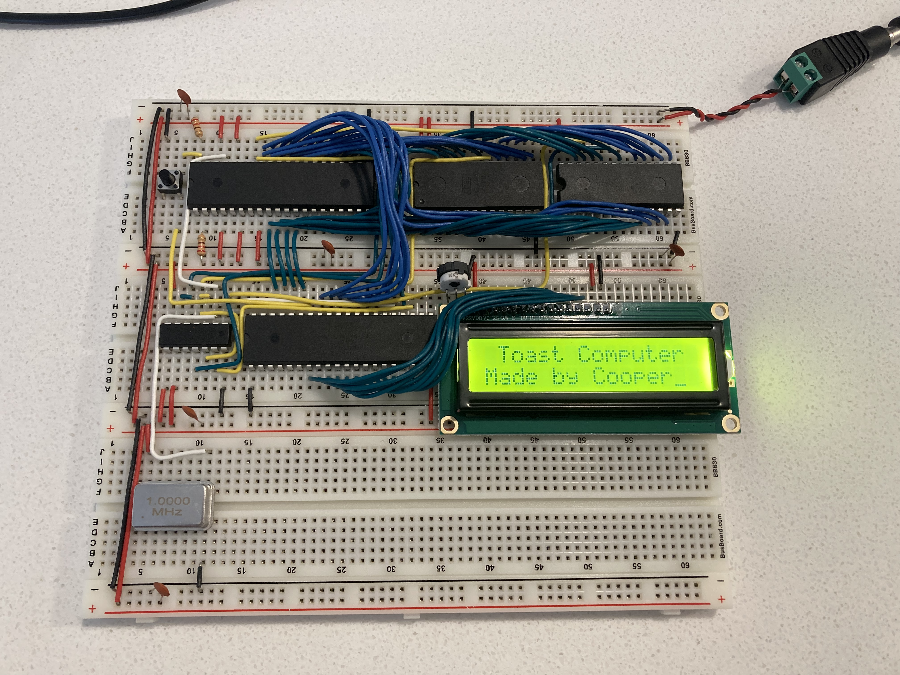
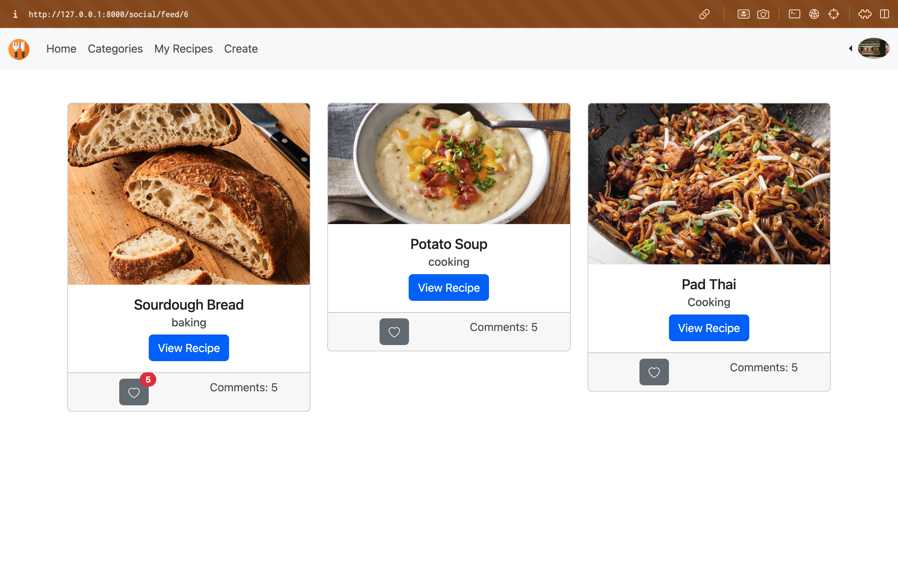

Hello! I'm a Cooper Maitoza
My Interests are in Embedded and Fullstack Software Development. I enjoy Low Level challenges embedded systems and big picture of Full stack developemnt.
The programming languages I am most confortable with are: C, C++, Python, and C#. I have professional experience in ASP.Net using C# and have had projects using JavaScript (React, node.js, express.js), Python (Django), C# (.Net), and Swift (SwiftUI).
I’m a recent Computer Science graduate from Weber State University with a passion for the great outdoors. Whether it’s backpacking for days, climbing 100-foot cliffs, or hiking up mountains just to ski back down. When I’m not exploring outside, I’m working on projects like building an Apple II replica or enjoying games such as The Witcher 3, Red Dead Redemption 2, Half-Life, and World of Warcraft. My daily driver is NEOVIM on MacOS's terminal but I'm a fan of Arch and plan to switch soon.
AlgoGuage is an educational website with a C++ CLI program running on a Linux
server for testing algorithms and data structures against each other
to compare time complexity and memory usage. This projects was my capstone project
my senior year at Weber State University.
My contributions were writting hash table algorithms and testing functions for the CLI
program in C++ and I helped out with UI components.
I have created and am still currently working on building an 8-Bit computer on a bread board. This computer utilizes the W65C02 CPU and has 256K RAM and 256K of Read Only Memory (ROM). This project has utilized Computer Architecture, Electronics, Data Structures, 6502 ASM, and Microprocessor development. I have learned so much from this project and plan on adding more features.
https://github.com/Weber-Cooper-Maitoza/Toast_Computer.git
This Django web app is a recipe creation and social media platform where users can create and share recipes, upload videos/photos, and post their culinary creations online. Other users can explore these posts, rate recipes, leave comments, and even suggest amendments to improve or customize the recipe (similar to a pull request).
https://github.com/Weber-Cooper-Maitoza/social-savoring.git
This is a Bluetooth volume control device using an ESP32 Microcontroller and BLE communication. (Work In Progress)
Graduated in december 2024 from Weber State University with a bachelors of science in Computer Science.
Graduated in May 2022 from Southern Utah University with a bachelors of science in Geology.